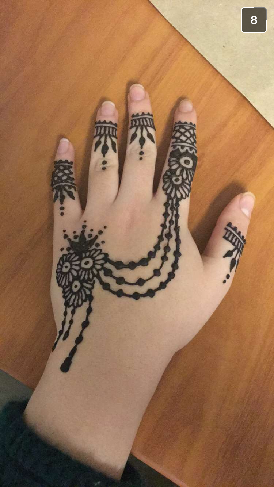
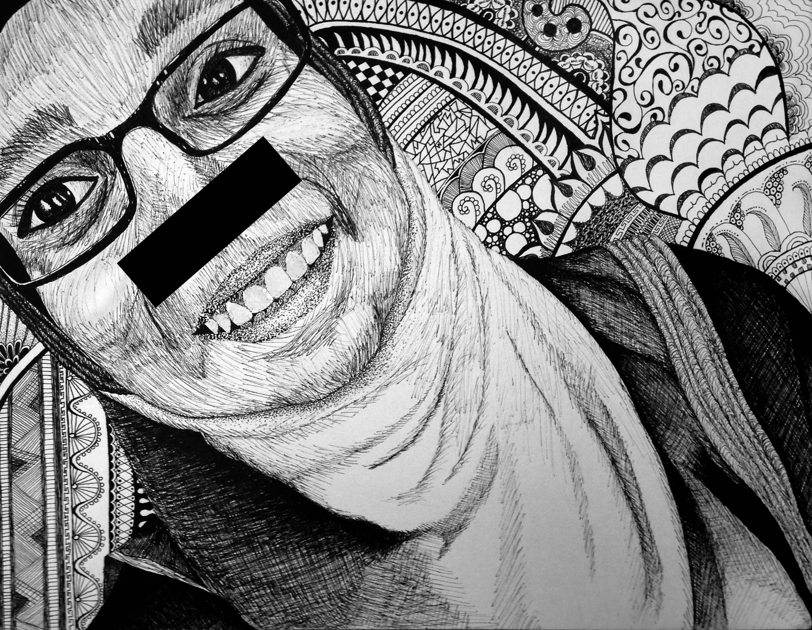

DO NOT SPEAK TO EACH OTHER DO NOT COMMUNICATE VISUALLY TO EACH OTHER COVER YOUR PRIZES COVER YOUR LOSSES LET'S BEGIN
Niche youre just a burden to everyone youre better off dead but taking your own life is an arrogance you can not dare to have a burden to everyone your own life is you cannot dare to have everyone better off- "The thing is, I'm not very smart. I may have been taught some smart things, but I can't really do much with them. Someone smarter probably could do a lot more with less. I mean, I also do really stupid stuff all the time. I would s ay I'm average. On the normal distribution curve I would be somewhere near that whole heap in the middle of most people. Probably in the lower standard deviation of average range too. I'm nothing special. I haven't effected great change on any scale really, and my few and far in between accomplishments don't amount to more than the number of honey BBQ chips I can fit in my mouth in one go or the number of kittens there is space for on my lap. I'm sure Guinness World Records could show that even in those things I'm not particularly exceptional. But that's okay. I think that we wouldn't have a top 10% or top .2% or whatever percentage without the corresponding bottom percent. The exceptional have no one to help with their talents without the average. And the below-average don't have anyone to be helped by without the average and the above- average. It is because I am average that I can see how special the above-average are. And I've been fortunate enough to meet a lot of amazing people. I think what I used to struggle with was wanting very intensely to be more than the mean. That was probably where the envy came from. But once I accepted that I'm really not all that, I found so much more peace as envy was replaced by appreciation and awe. It's like I'm in my own little cubbyhole, made just for me in the greater scheme of things. And I get to watch all of the really special people go by and attain greater things. I get to help them see the potential they don't see in themselves, the potential they've become too familiar with to notice because it is their own. Little ol' me (well, by the size of my hips not so little haha) may not be able to do much on her own, but she's content to help others do what she can't. Think of me like a library- chances are you don't have to go very far to find one of me in a place, and the information I have is no good without someone to read it and put it to use. Feel free to flip through a magazine casually or look for something you might need. If you're doubting yourself, I've got just the book. It took me a while, but I think I’ve found my niche."
PICK UP A CARD IF THERE AREN'T ANY LEFT WHEN YOU COME UP TAKE A PENNY
You should do your work. no That's not even a plausible answer, espe- ooh, what's that is that a YouTube video imma click that No, don't! You don't have the time to– omg ♫look at that face♫ ♫this looks like my next mistake♫ Please stop! You can’t afford another Internet obsession! so perfect so perfect oh look I'm not the only one who likes this more people to be trash with yessssssssss thank you Tumblr What is wrong with you?! Do you not hear me?! This is good this is all good I love this concept art mmm yes 11/10 much enjoyable such good Doesn’t matter how many deep breaths I take— You always do this, wasting time you can't spare. You have more important things to do. How many times do I have to repeat myself?! who says I wanna do them huh huh huh das right nobuddy mhm mhm …you're sabotaging your future you know. that's the way uh huh uh huh I like it Whatever the hell made you this way, it needs to be dealt with, and quickly. be who you wanna be Barbie girl ♫i was born this way♫ You're. Not. Even. Making. Sense. Now. you may have noticed that im not all there myself ~cheshire cat Lewis Carroll was under the influence of something while writing that book. You– im a broken teapot short and sour leave me off my rocker and pour my heart out Enough with the nonsense. I don't have the patience and you don't have the time. You're rambling about hearts, but you actually are the Heart. You're supposed to be the source– of motivation, of purpose, of– beedo beedo beedo it's getting hot in here so take off all yo clothes I give up. wouldn't be the first time bub *gasp* i c something else 2 love in my newsfeed gimme gimme gimme Why did I even bother? I'm not enough to fix you anyway. oh u bother b/c we used 2 work well together a long time ago yup yup but like somehow we lost touch I think u left me behind and forgot about me left me 4 yo numbers and ish i had no one to talk to no one to listen to me it hurt so i kinda got lost in other stuff its easier 2 deal only in trivial stuff and well, i guess its too late now cause ur too guilty about not being able 2 control me and im too broken 2 b controlled But you’re not listening, are you Mind?
STOP (PLEASE TELL ME THAT WE'VE NOW STOPPED) HERE'S SOME ACTUAL (NON-RUSHED) WORK OF MINE:  